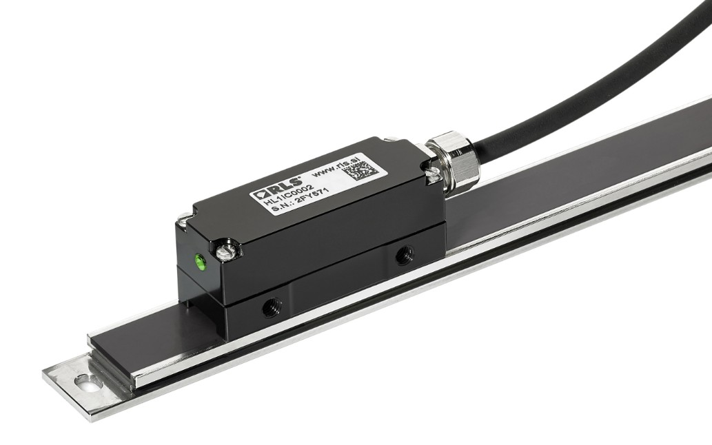
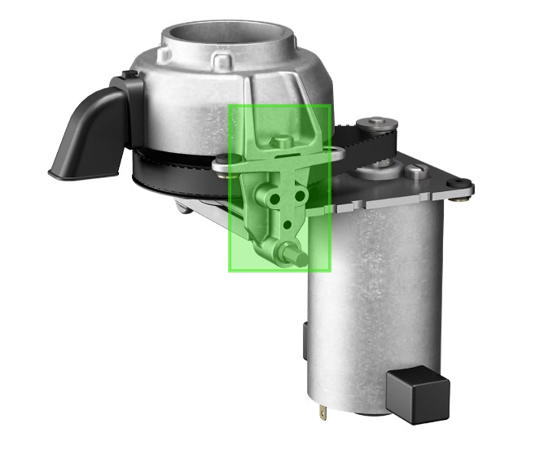
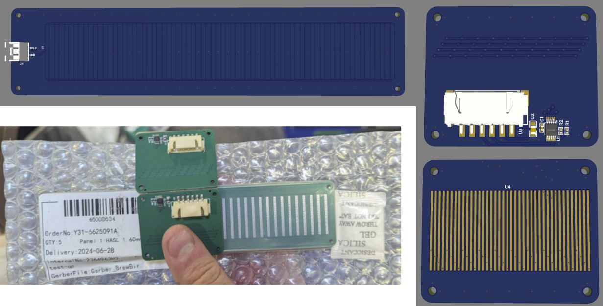
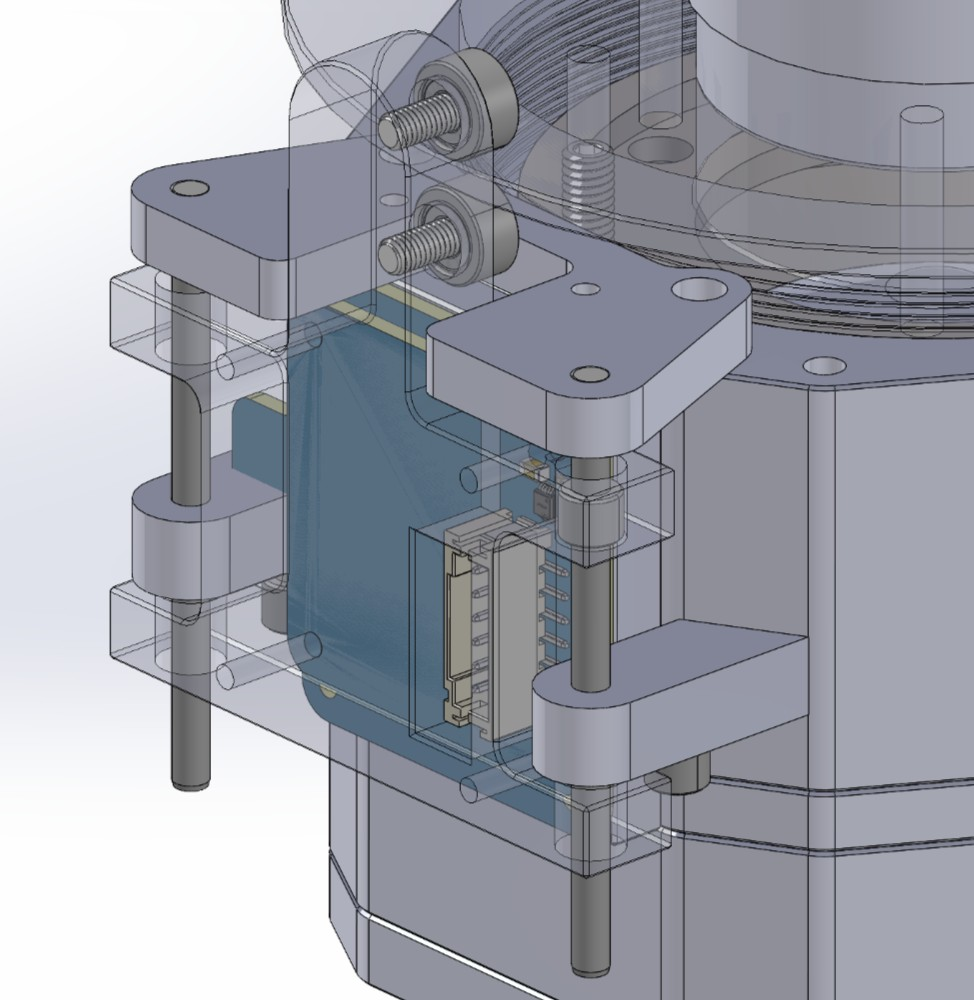
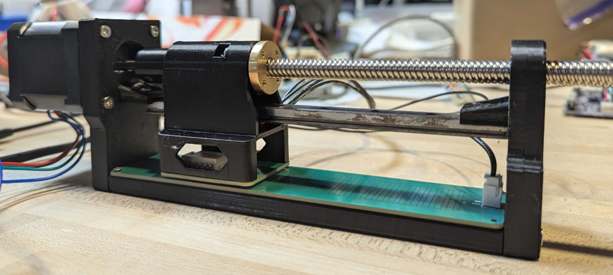
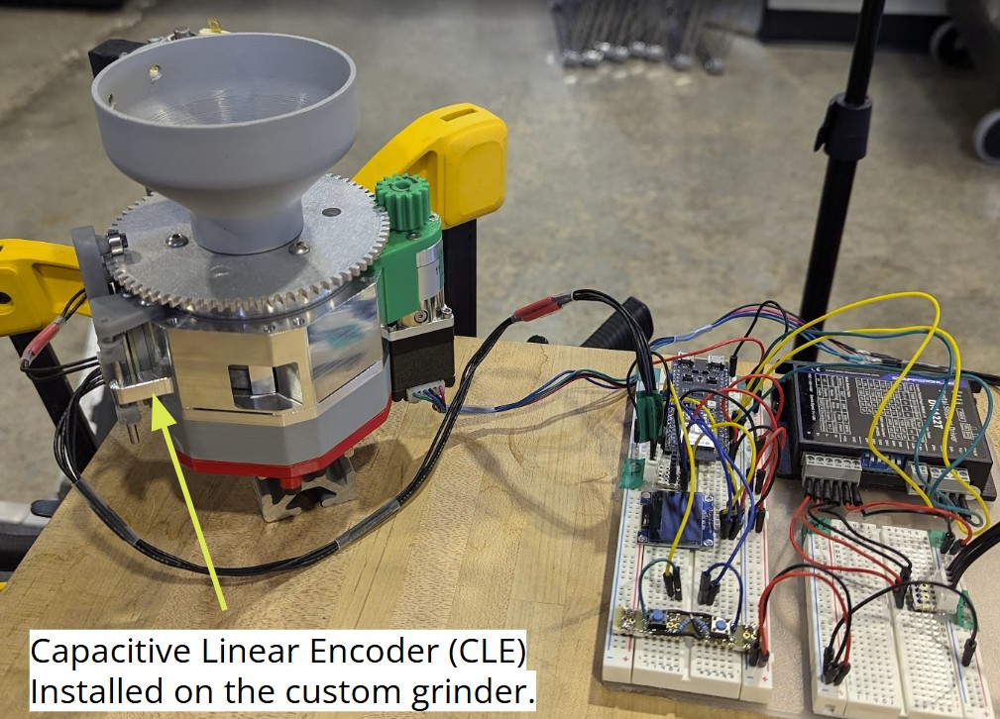
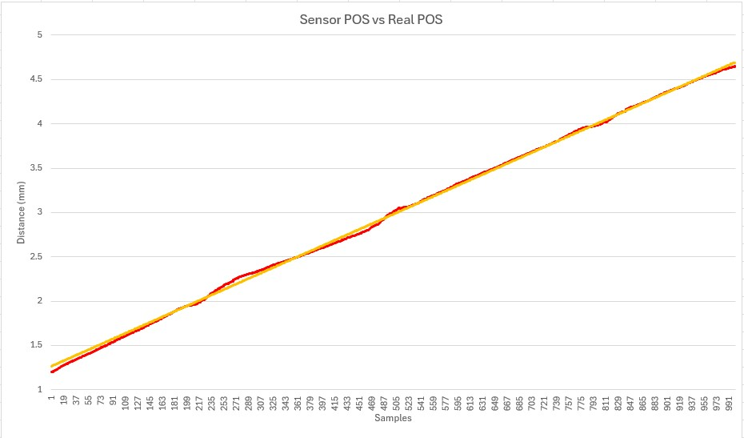

01 — Problem
No sensor fit the constraints
At Brewbird, the coffee grinder module required precise linear position feedback to reliably control grind size — which directly determines taste. The existing solution was inconsistent, leading to grind variance and unpredictable brew quality.
Off-the-shelf linear encoders were too large, too expensive, or not accurate enough for the ±20 µm tolerance the application demanded. There was a genuine gap in the market.
"When existing solutions lacked a balance of size and accuracy, I had to develop a novel approach from first principles."


02 — Process
From theory to prototype
Capacitive sensing was the right approach — non-contact, robust to contamination, and cheap to implement on a PCB. Two overlapping conductive plates form a capacitor whose value changes predictably as they slide.
Theoretical modeling
Derived capacitance-vs-displacement from first principles. Modeled fringe fields and parasitic capacitance affecting accuracy at small scales.
PCB geometry design
Designed electrode geometry in EasyEDA to maximize sensitivity and minimize cross-axis error. Iterated on guard ring placement to reject environmental noise.
Prototype fabrication
Ordered PCB prototypes and assembled the capacitive sensing circuit with a capacitance-to-digital converter IC. Wrote firmware to read and filter position data.
Validation & characterization
Built a test fixture to measure encoder output against a ground-truth reference. Characterized linearity, hysteresis, and repeatability until ±20 µm was reliably achieved.



03 — Solution
A novel sensor for under $5
The final design is a two-PCB capacitive linear encoder that fits within the existing mechanical envelope. Signal conditioning firmware converts raw capacitance to a linearized position output at high update rates.
The system is non-contact, wear-free, and immune to lubricant contamination — critical for a food-adjacent product.


04 — Result
Grind reliability — and taste — improved
Closing the grind size feedback loop directly improved taste consistency across the Brewbird fleet. The project demonstrated a repeatable methodology for novel sensing under tight size and cost constraints.
05 — Key Learning
The validation fixture is as important as the sensor
Claiming ±20 µm accuracy is meaningless without a ground-truth reference to measure against. Building the test rig with a precision reference encoder was as much a design challenge as the sensor itself — and it's what turned a promising prototype into a validated design. Without it, the spec would be a guess.
The broader lesson: when no off-the-shelf solution exists, it's usually because the specific combination of constraints hasn't been tried, not because it's impossible. Capacitive sensing at this scale wasn't novel — applying it within this particular size, cost, and contamination envelope was. Working from first principles under tight constraints produces solutions the market doesn't have yet.